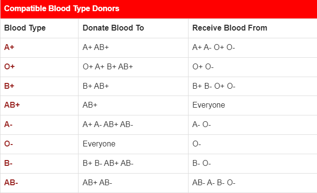

Learn About Donation

After donating blood, the body works to replenish the blood loss. This stimulates the production of new blood cells and in turn, helps in maintaining good health.

After donating blood, the body works to replenish the blood loss. This stimulates the production of new blood cells and in turn, helps in maintaining good health.